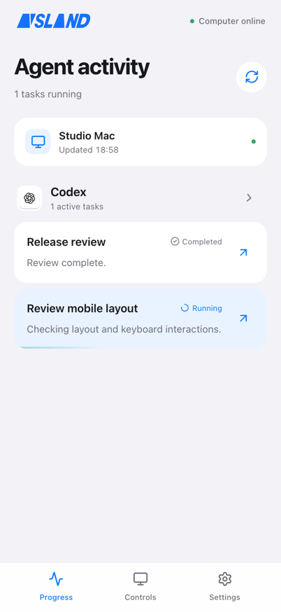

The Compact Island
Your agents keep working in the notch while you stay in your window.
Stay in flow.
Keep up with your agents.
Follow your agents and send the next instruction without leaving the window you’re working in.
Explore the island

An agent finishes halfway through your reading. You switch apps, find the conversation, send the next task, then hunt for the sentence you left behind.
Open the island above your document. See what finished and send a follow-up to the same conversation. Your next sentence is right where you left it.
Follow a logo to the top of the display. The island opens onto the same session view you use on your Mac.
Your agents keep working in the notch while you stay in your window.
The island opens. Codex is checking the mobile layout, and the product guide is ready to review.

See every conversation in one window as soft light moves behind the glass.
Pair your phone to see what’s running and pick up a conversation away from your desk.
Open mobile appv0.3.55 · Apple silicon
v0.3.55 · x64